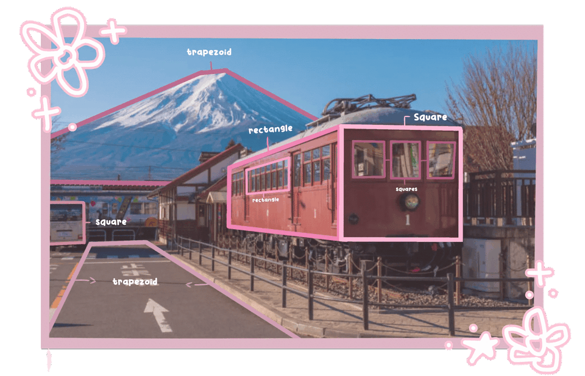

Science
The Volcano is considered active and has erupted more than 15 times, the last eruption was 1707 On December 16, 1707. Mount Fuji is not expected to erupt anytime soon, thus this does not mean that the volcano cannot be active and produce small eruptions which could cause some ash fall in populated areas.
MAPEH
English
At first, I thought the place was a camp site due to it's beautiful view of Mount Fuji, I also thought that it was only a very nice tourist destination for everyone around the world. I was really surprised finding out they would have such unique art and festivals. After my research, my impression did change, i learned more new things about their city, Such as their crafts and for their precious stone cutting.
Filipino
Noong unang panahon, ang Mt. Fuji ay isang aktibong bulkan na nagbubuga ng napakaraming usok. Naniniwala ang mga naninirahan sa lugar noong panahong iyon na ang pagsabog ng Mt. Fuji ay kumakatawan sa galit ng isang diyos, at nagtayo sila ng isang dambana upang pakalmahin ang puso ng diyos. Ang diyosa, si Konohanasakuya Hime, na lumilitaw sa mga alamat ng Hapon, ay nabuntis sa kanyang asawang si Ninigi-no-Mikoto sa gabi ng kanilang kasal. Nagalit si Hime kay Ninigi-no-Mikoto, na naghinala sa pagkakakilanlan ng ama ng sanggol. Pumasok siya sa silid ng panganganak, na walang labasan, at nagsimula ng apoy na nagsasabing, "Ang mga sanggol ay dapat na ipinanganak ng ligtas, kung ang kanyang ama ay isang diyos," at nagsilang ng tatlong bata sa gitna ng apoy. Nang maglaon, si Konohanasakuya Hime ay naging diyos ng Mt.Fuji, ang magandang diyosa ng Apoy.
Math

ESP
In Japan, people greet each other by bowing.
A bow can be anything from a slight head nod to a deep waist bend. A deeper, longer bow conveys respect, while a simple nod with the head conveys casualness and informality. People get down on their knees to bow if the welcome takes place on a tatami floor. Bowing can also be used to express gratitude, apologize, make a request, or ask for a favor. Bowing at chest level with palms together.
Sports
-Fujisankei Classic
Ang mga tournament ng Japan Golf Tour ay Ginaganap sa Fujizakura Country Club sa Yamanashi bawat taon. Isa ito sa mga propesyonal na paligsahan sa golf sa Japan. Una itong Nilaro noong 1973 sa Takasaka Country club (Yoneyama Course). Lumipat ang tournament ay ginanap at sa Fuji course noong 1981. Ang tournament ay ginaganap at sa Fujizakura Country Club sa Yamanashi prefecture mula noong 2005.
Sports
-The Yoshida Fire Festival
Ito ay pinagdiriwang kapag tumama na ang taginit sa kanilang lugar, Isa ang Pistang ito sa mga kakaibang pagdiriwang sa bansa. Kada taon ng Agusto ng 2 at 27, Ang lungsod ng Fujiyoshida sa Yamanashi nagaganap ang Yoshida Fire Festival sa kitaguchi Hongu Fuji Sengen Shrine na matatagpuan Sa paanan ng napakalaking Mount Fuji. Ang Pagdiriwang ay kilala Sa Japan para sa pagiging isa sa tatlong pinaka kakaibang pagdiriwang.
Arts
-Kimono Arts of Yamanashi Japan
Ang mga Likha ni Kubota ay sama-samang kilala bilang "The Kubota Collection" Ang koleksyon ay binubuo ng bilang 104 kimono na tinina gamit ang "itchi kutsu jigahara technique" kasama sa mga gawa mula sa Mount Fuji, Ocean, Universe, series, ilang indibidwal na piraso at hindi natapos na panghabambuhay na proyekto ng kubota, The Symphony of Light.